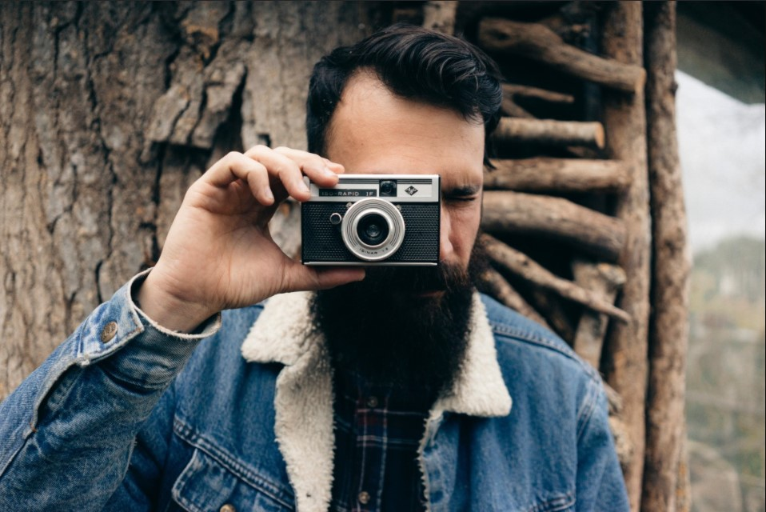

A Picture House surgiu atraves da iniciativa e parceria de dois fotografos com o intuito de levar a arte da fotografia ao alcance de todos.
Procuramos levar a arte da fotografia para todos em busca de gerar não
só o entretenimento como instigar a vontade em produzir a arte
tambem.
A ideia surgiu a partir de um comentario feito por Robert (Co-Fundador
do projeto) com sua esposa, pensando sobre abrir uma galeria fotografica
para expor seus melhores trabalhos. Sua esposa sempre envolvida com
causas na comunidade local, ofereceu a ideia de que fossem oferecidas
oficinas de ensino da arte da fotografia.
Alem das aulas, no local tambem consta uma galeria com o acervo exlusico do casal, com fotos retiradas durante suas viagens ou fotos de outros trabalhos em dupla ou individuais. Assim como todo o resto do predio, essa ala é aberta para visitações. As oficinas funcionam de Segunda a Sexta-Feira, das 10:00 às 14:00. E o espaço da galeria é aberto ao publico nos mesmos dias, das 10:00 às 20:00. Os ingressos podem ser adiquiridos via internet ou nas bilheterias do local.